Trade Idea Generation – Identifying Catalysts
The final fundamental step that turns an investment idea into a tradeable one: identifying the catalysts that will actually move the stock inside the 20–60 day window.
Catalysts are the single thing that separates a trade idea from an investment idea — and a trader from an investor. Without a foreseeable catalyst in the 20–60 day time horizon you don't have a trade, you have dead capital. This chapter defines what a catalyst is, splits them into three categories, and walks the JBLU worked example of measuring catalyst frequency to spot 'tumbleweed' stocks.
The gist
- Catalysts are the difference between an investment idea and a trade idea — and therefore between an investor and a trader.
- Only one video in the series is dedicated to catalysts, but they drive both timing and structuring; without them you only have an investment idea.
- For work efficiency we jump straight from fundamentals to catalyst identification — timing and trade structure come afterwards.
- The trader's mindset is 'F U P M' — F you pay me: when is the stock going to move? If it won't move in 60 days, allocate capital elsewhere.
- A catalyst is new information that moves the needle on KPIs, revenue, earnings and forward valuation — it must be timely and NOT already priced in (not old news).
- Catalysts split into three areas: Stock & Sector Specific (Operational), Technical (idiosyncratic to the company), and Market / Economy (a macro shift affecting all stocks).
- 'Tumbleweed' stocks have no catalysts between quarterly earnings — thin news means nothing materially happens; both gunslingers just stand off and kill each other.
- JBLU worked example: 343 press releases over 51 months (80.71/yr), 307 non-earnings ≈ 6/month, 78 events & presentations, 25 non-earnings ≈ every 2 months — a communicative, non-tumbleweed name.
- Meaningful vs non-meaningful: JBLU 'Unveils Reimagined Mint' (1-Feb-2021) moved the stock from ~$15 to ~$21; taking delivery of planes is old news / just PR.
- The ~$650M convertible ≈ ~10% of JBLU's ~$6.5bn market cap — big enough to be a technical catalyst; a small offering would not be.
Why this is one of the most important videos
- Catalysts are the difference between what constitutes an investment idea and what constitutes a trade idea — and, by extension, what makes you a trader rather than an investor.
- In the pro-trader systematic process (Theory → Implementation), the sequence is Fundamentals → Timing → Trade Structure → Risk Management, but catalysts sit at the Trade Structure stage and are what green-light the trade.
- Fundamentals is 'Most Important' (PTM + PFTM + self work); Timing is 'only basics required'; the trade is a green light only as long as there are catalysts in place.
- There is no point timing a trade with technicals if you can't identify any catalyst to move the stock in the 20–60 day horizon — so for work efficiency we jump from fundamentals straight to catalyst identification.
By this stage the systematic long/short process should be imprinted. This lesson clarifies exactly where catalysts fit: they are the fundamental step that separates traders from investors, so we identify them before wasting effort on timing and structure.
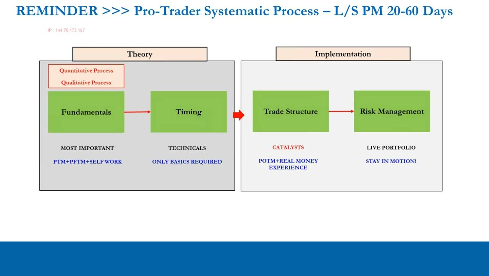
Trade idea vs investment idea: the time horizon
- At the fundamental stage we identify positive and negative outliers and generate a directional bias — but we haven't yet placed a time limit on the trade, so all we have is an investment idea.
- What separates traders from investors is a shorter time horizon: we must have catalysts occurring within the 20–60 day window so positions are defined as trades, not investments.
- The evolution of the process runs Quant Discovery (P/N outliers, forward valuation) → Quant Evidence (backwards-looking financial statements, numerical tailwind) → Qual Drivers 1 (KPIs & the management operating plan, 'beneath the hood') → Qual Drivers 2 (Catalysts, 20–60 days, 'Getting Paid!').
- KPIs are the first driver (they move revenue and earnings); catalysts are the second and final qualitative driver — catalysts drive the stock PRICE, and are what set traders apart from investors.
- The worst trap is letting a live trade quietly become an investment — trading is about consistency, and the quality of trade ideas (which must include catalysts) is what drives variable P&L once risk management is fixed.
Fundamentals identify a bias; catalysts put a clock on it. Only the qualitative step of identifying catalysts converts a solid investment idea into an actual trade idea that will pay out inside the window.
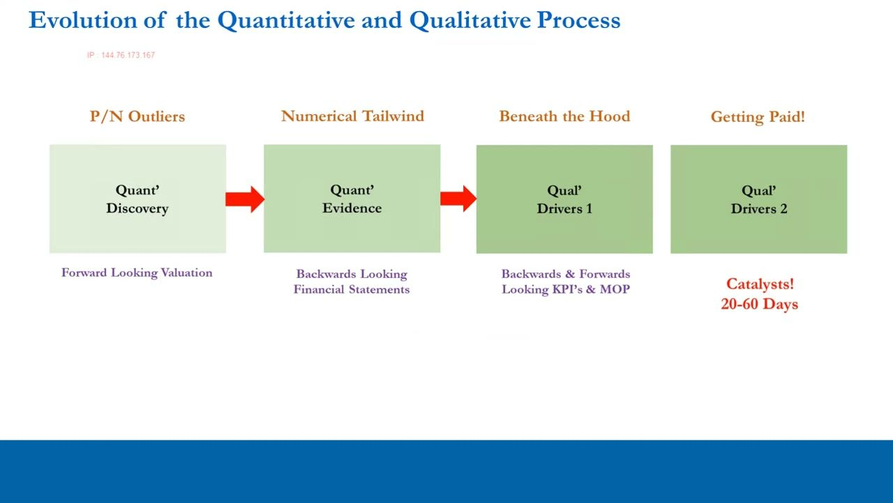
The mindset: 'F U P M' — F you pay me
- The industry acronym F U P M — 'F you pay me' — sums up the trader's demand to get paid within a shorter time horizon than an investor.
- When someone brings you what they think is a trade idea but it's actually an investment idea, the natural response is the obvious question: 'When is the stock going to move?'
- Doing the mechanical quant work to find a fundamental long or short is the easy part; completing the trade idea by identifying catalysts, timing and structuring is what's hard.
- If capital can't earn a return in 20–60 days it's dead — so allocate it to a trade idea that will actually move; 'F you pay me' should be etched in your memory.
- The same phrase is used, often in jest, on trading floors around bonus season for the level below which a trader feels genuinely insulted.
The phrase captures the entire discipline: a trader expects to get paid inside the window. If a stock has no near-term catalyst, the honest answer to 'when will it move?' is 'I don't know' — which means it isn't a trade.
What does a catalyst look like?
- A catalyst is any Stock or Sector news or event that moves the needle on KPIs & Quant (Revenue, Earnings & Forward Valuation) — this is Operational.
- It can also be any Technical news or event that may move the stock in the immediate future.
- Or it can be a Macroeconomic news or event that may move the stock in the immediate future, outside company control (Market / Economy).
- Crucially it must be timely data and NOT expected — i.e. not already in the price. If it's already disseminated by the market it's 'old news'.
- We split catalysts into three areas: Stock & Sector Specific (idiosyncratic, affects all stocks in the sector), Technical (idiosyncratic, affecting the company itself), and Market / Economy (a macro shift affecting all stocks in the market).
A real catalyst is incremental new news flow that moves the needle in a meaningful way, bringing in new buyers for a long or new sellers for a short. Old, priced-in news is not a catalyst.
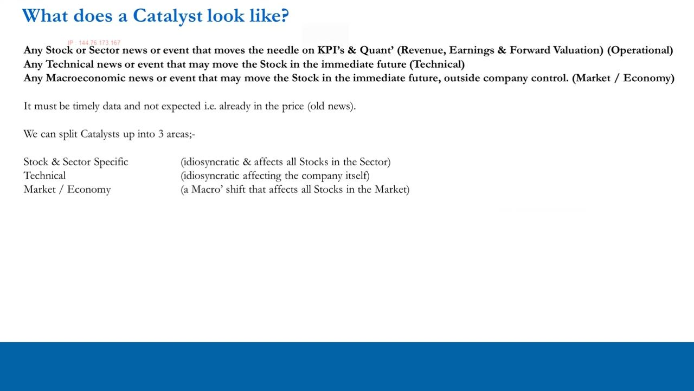
Operational catalysts — stock & sector specific
- Quarterly and annual earnings announcements and changes in forward guidance for the company and of competitors.
- Product and/or service launches for the company and competitor launches; changes in KPI expectations for the company and/or competitors.
- Company credit spreads and/or credit spreads of competitors; credit upgrades or downgrades from ratings agencies.
- Stock upgrades or downgrades from equities analysts (revenue & earnings estimates) and research analyst price-target changes based on a shift in expectations.
- Legal and regulatory changes for the sector and stock; ISM Manufacturing or ISM Services data leading to changes in expectations.
- Changes to the supply chain; changes in inventories (build or draw); rapid changes in commodities prices and inventories; and currency moves affecting revenue and earnings if not hedged.
This is a non-exhaustive list of operational catalysts — the point is the categories, which apply across sectors. Meaningful ones are the unexpected changes that shift revenue, earnings and forward valuation.
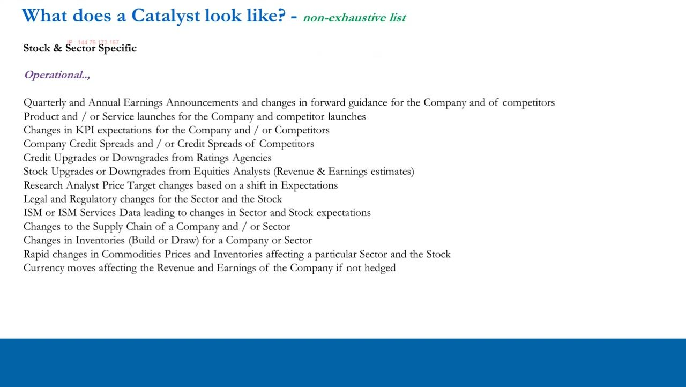
Technical catalysts — idiosyncratic to the company
- Announcement of stock buybacks, stock splits, rights issues, or a dividend increase or cut.
- Acquisitions, company restructurings (changes to the capital structure) and M&A deals — for the company or its competitors.
- Index / market inclusions or omission — e.g. entering or leaving the S&P 500, or the Russell 2000; inclusion exposes a stock to passive inflows, omission removes them.
- ETF inclusions / omissions, which add or remove the stock as a beneficiary of ETF flows.
- Short interest getting called in by lenders, producing a short squeeze — a technical situation that can move a stock meaningfully.
Technical catalysts don't change the operation but change the technical situation in the stock — capital-structure events and forced flows that can move price whether you're long or short.
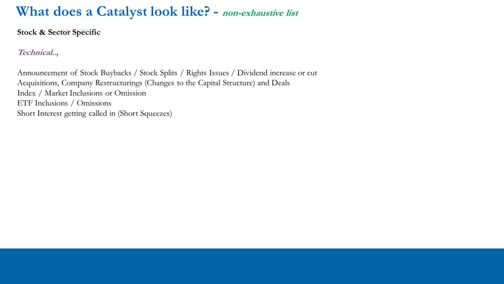
Market / economy catalysts — the macro shift
- Rapid changes in commodities prices and inventories affecting the overall stock market.
- FOMC interest-rate decisions and FOMC minutes; changes in bias and language.
- Rising or falling market rates — nominal and real rates.
- Changes in consumer sentiment, headline inflation expectations and employment expectations.
- Currency moves affecting the overall stock market.
These are the macro catalysts covered earlier in the course. If something affects the whole market, positive outliers (longs) should outperform and negative outliers (shorts) should underperform — so as traders we're most interested in stock- and sector-specific catalysts.
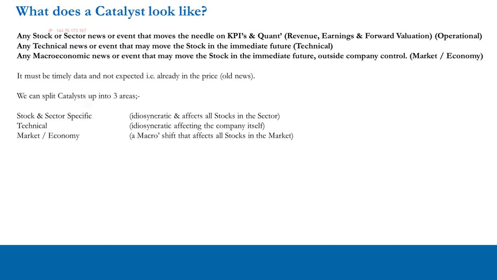
What we're really interested in as traders
- Because we mostly select outliers, we're really interested in identifying stock- and sector-specific catalysts, both operational and technical.
- We need to know if the stock we're looking at actually has FREQUENT catalysts — if there's no evidence of past catalysts, what makes us think there will be any in the future?
- Quarterly earnings reports are a KNOWN catalyst — everyone knows the date and the consensus estimates and range, so alone they don't make a trade idea.
- What we really want are catalysts between earnings reports that may shift expectations (the consensus) and therefore the stock price in a meaningful way.
- By the time a company reports, the price may already have moved as expectations shifted on other news — the stock has already 'travelled and arrived' and priced the numbers in.
The earnings date alone isn't enough. The edge comes from the news between earnings — the incremental information that moves consensus before the report and gets the stock moving inside our window.
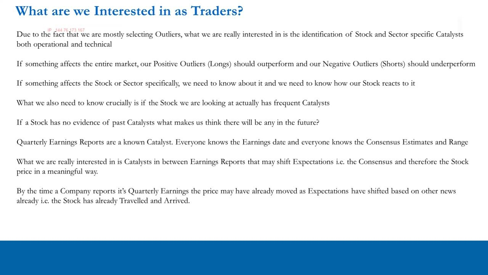
Tumbleweed stocks
- Stocks with typically no catalysts between quarterly earnings reports are called 'tumbleweed' stocks.
- Picture two gunslingers in a quiet Western town with a tumbleweed rolling past — one is you (long), the other is on the other side (short), but nothing happens.
- Nothing happens in Tumbleweed Town between quarterly earnings reports — it's so boring the gunslingers have a standoff and kill each other; that's the only thing that happens in your 20–60 day window.
- All public companies are regulated to update the market on any news that may materially affect future earnings — so thin news flow means nothing materially happens to the business or the stock.
- These are the situations to stay away from: we need catalysts inside the 20–60 day horizon that will move the stock, whether long or short.
Regulated disclosure is the trick: because companies must publish material news, an absence of news is itself evidence that nothing is happening. A tumbleweed stock leaves you sitting for months waiting for earnings day.
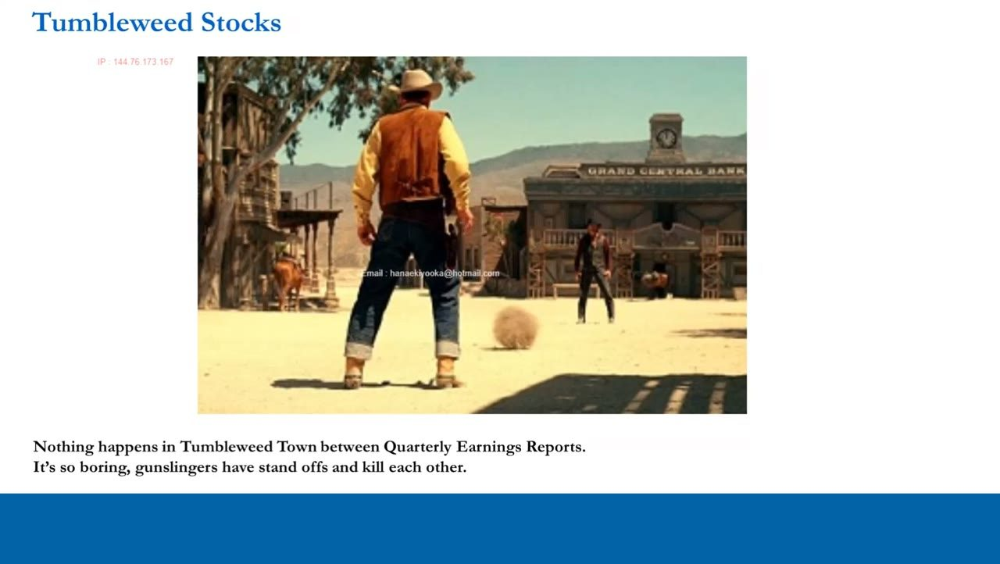
Management communication as a tumbleweed test
- On quarterly earnings day, management communicates via the earnings call and its transcript; between earnings reports, communication comes from the Investor Relations department.
- A highly communicative management team between earnings is good for long ideas, and potentially bad for shorts — unless management is loudly telling the market how bad things are, which is great for shorts.
- Management going quiet as fundamentals deteriorate ('hiding in a cave') is great for shorts and bad for longs.
- Generally, a management that isn't communicative between earnings means there are likely no catalysts to create volatility — the company is doing only the regulatory bare minimum.
- For long ideas we ideally want management making lots of positive incremental noise between earnings reports.
Assessing how, and how often, management communicates between earnings is a direct read on whether a stock is a tumbleweed — thin, minimum-required disclosure signals a boring stock.
The catalyst-frequency process
- Take the number of press releases the company has put out over the last 1, 2, 3 or 4 years and put them in a spreadsheet with the date and headline.
- Work out a total for all press releases plus the annual and monthly average (a quarterly average too).
- Transpose the weekly and daily charts for the period and correlate which releases moved the stock the most and by how much; ask which press releases additional to earnings were price-sensitive and why.
- Is it a tumbleweed stock — i.e. does it not typically have catalysts between earnings?
- Add in events and presentations (which include earnings) and upcoming earnings dates for competitors; identify potential upcoming catalysts in the next 20–60 days so you can structure trades around them.
- A downloadable 'press releases template' accompanies the video; the process is cumbersome but can be outsourced (Freelancer, Fiverr, Upwork) once you're making money — learn it yourself first.
This is a repeatable template you can apply to any stock in any sector. It quantifies management communication frequency and reveals which catalysts historically move the stock, so you can forecast the ones coming up.
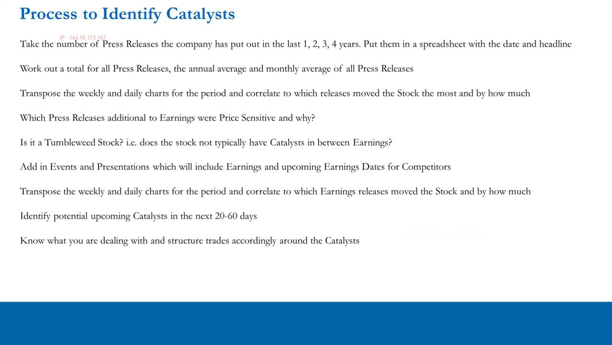
JBLU worked example — frequency of communication
- JetBlue (JBLU) IR page: split into Press Releases and Events & Presentations, downloaded into a spreadsheet with dedicated tabs (Tables, Press Releases, PR Earnings, PR Non-Earnings, EandP Total, EandP Earnings, EandP ex-Earnings).
- Total press releases: 343 over the period; time period = 51 months = 17.00 quarters = 4.25 years.
- Press releases: 80.71 per year, 20.18 per quarter, 6.73 per month; by year — 2021: 33, 2020: 61, 2019: 69, 2018: 99, 2017: 81 (Total 343).
- PR non-earnings related: 307 total → ~6.02 per month (≈ 6 press releases a month between earnings); PR earnings-related: 36 total.
- Events & Presentations combined: 78 total; E&P non-earnings related: 25 total → ~0.49 per month (≈ one every two months); E&P earnings-related: 53 total.
- Read-off: JBLU management is clearly incrementally communicative above and beyond quarterly earnings — promising for a 20–60 day horizon, NOT a tumbleweed stock.
The aggregate tables turn raw releases into frequency. With ~6 non-earnings press releases a month and a non-earnings event roughly every two months, JBLU passes the tumbleweed test with room to spare.
Meaningful vs non-meaningful catalysts (JBLU)
- Meaningful catalyst = new information that moves the needle on KPIs, revenue, earnings and forward valuation; in an ideal world it's unexpected and the price move is impactful.
- 1-Feb-2021 'JetBlue unveils completely reimagined Mint... setting the stage to change the transatlantic market' — the key word is 'unveils'; this qualified and the stock reacted, rallying from ~$15 to ~$21 in a short space of time.
- 23-Mar-2021 'JetBlue announces pricing of $650 million convertible senior notes offering' — a technical catalyst: at the time JBLU's market cap was ~$6.5 billion, so ~$650M is ~10% of market cap, big enough to put a technical ceiling on the stock as convert holders hedge.
- Non-meaningful / old news: 26-Apr-2021 first Airbus A220-300 enters service and 29-Apr-2021 taking delivery of the first A321LR — taking delivery of planes is the END RESULT, not a needle-mover; unveiling new plans is what moves the needle.
- Pure PR that means nothing for KPIs: 17-Dec-2020 'celebrating the season of giving, JetBlue donates blankets, pillows, amenity kits...'.
- Size matters for technical items: a common-stock offering (1-Dec-2020) or convertible is only a catalyst if the dollar notional is large relative to market cap; a small deal is not.
The discretionary skill is separating incremental NEW information from old news and PR. 'Unveils' moved JBLU ~$15→$21; taking delivery of the very planes that were previously unveiled did not. New information moves the needle — the end result doesn't.
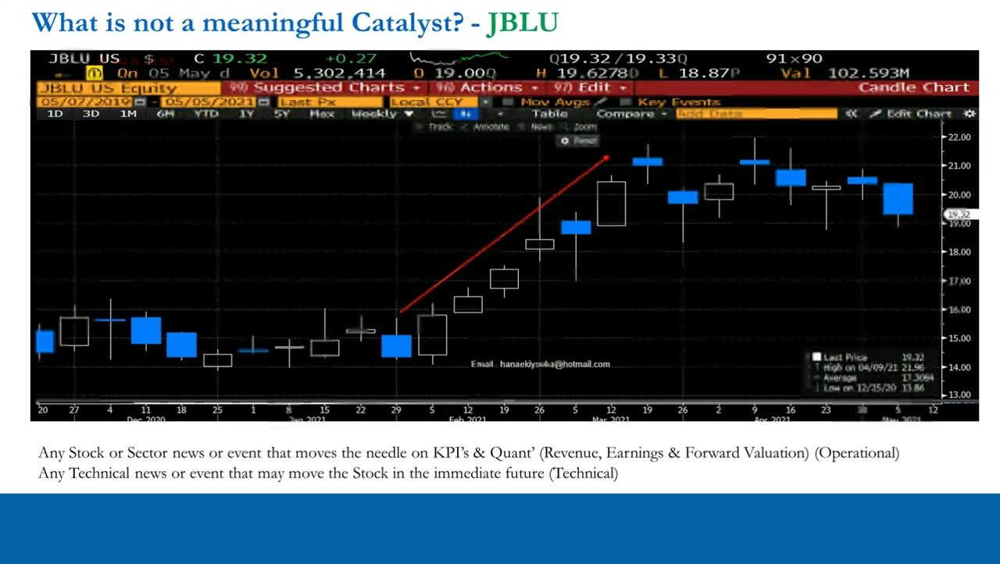
Building the forward catalyst calendar
- Repeat the exercise for non-earnings events and presentations: for JBLU there's a Barclays conference in February, a JP Morgan conference in March and a Wolfe Research conference in May.
- This builds a picture that the busiest, most catalyst-rich period for JBLU is Q1 through mid-Q2.
- Sitting at the present moment (early May 2021), pen a forward list of potential catalysts: the Wolfe Research conference via webcast in May 2021; additional code-sharing announcements adding routes; updates on Mint and transatlantic uptake; and headlines on the convertible/equity offerings funding expansion.
- There was an official New York COVID-19 reopening date of July 1st, 2021 — so watch domestic and international bookings-volume headlines.
- Also map the main catalysts for competitor airlines in the sector, which could affect JBLU in the same period.
- If your identified catalysts don't occur or are uninspiring and the stock doesn't react, that's a data point that you may be wrong within the 20–60 day window.
Frequency analysis plus a conference calendar lets you write down, in advance, what will likely move the stock and roughly when — the real edge in targeting outsized absolute returns.
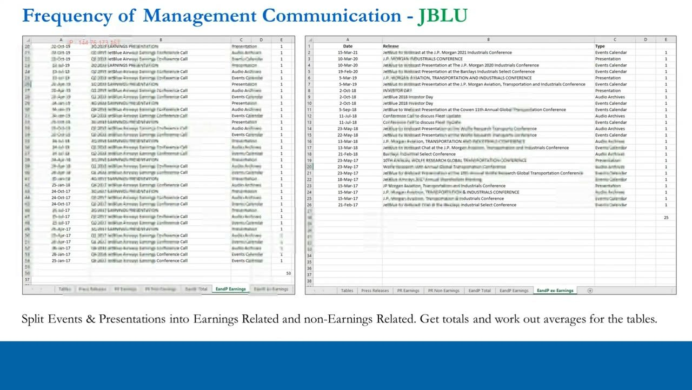
Summary — the discipline
- Identifying meaningful catalysts is essential because we are long/short portfolio managers with a trading mandate in the 20–60 day horizon; it's crucial for both timing and structuring.
- A trade idea is NOT complete until you've identified catalysts.
- An idea may not qualify as a trade idea if the only catalyst is the quarterly earnings date, say 45 trading days away — this doesn't mean the stock can't move, but trading is about consistency and putting the odds in our favour.
- Continuously filling the portfolio with names that show little management communication and little potential to move gives you a portfolio of tumbleweed stocks.
- There are always plenty of great longs and shorts with communicative management and IR — plus great shorts that are terrible at communication or suddenly go quiet when things go wrong.
- Incremental 'new news' is the key; you can also run a DoR (distribution of returns) analysis, looking for 1- and 2-standard-deviation moves, to correlate the biggest past daily and weekly moves with press releases and events. It's a process you can apply to any stock, in any sector, forever.
The JBLU example is just a template for process. The discipline — measure catalyst frequency, avoid tumbleweeds, and identify meaningful non-earnings catalysts inside the window — is what turns fundamental ideas into consistent, tradeable, paid-out positions.
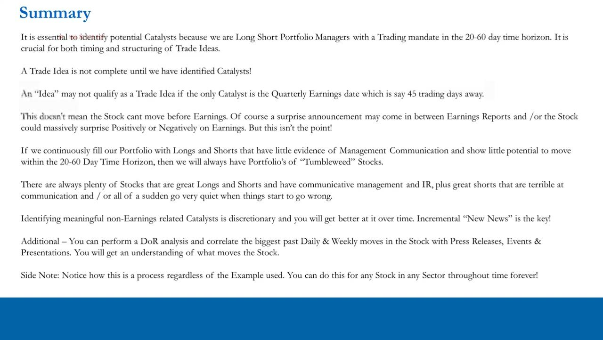
Glossary
- CatalystNew, timely, not-yet-priced-in information or event that moves the needle on KPIs, revenue, earnings and forward valuation (or the stock technically) — what turns an investment idea into a trade idea.
- Trade idea vs investment ideaAn investment idea is a fundamental directional bias with no time limit; a trade idea adds identified catalysts inside the 20–60 day horizon, placing a clock on the position.
- F U P M ('F you pay me')Trader mantra demanding a return within a short horizon — the response to an idea with no near-term catalyst: 'When is the stock going to move?'
- 20–60 day time horizonThe window in which the long/short portfolio manager expects a trade to work; catalysts must fall inside it.
- Operational catalystStock- or sector-specific news/event that moves KPIs, revenue, earnings and forward valuation — e.g. earnings, guidance changes, product launches, upgrades/downgrades.
- Technical catalystAn idiosyncratic capital-structure or flow event affecting the stock itself — buybacks, splits, rights issues, M&A, index/ETF inclusion or omission, short squeezes.
- Market / economy catalystA macro shift outside company control that affects all stocks — FOMC decisions, rate moves, commodities, sentiment, inflation and employment expectations, currency moves.
- Old news / priced inInformation already disseminated and expected by the market, so already reflected in the price — not a catalyst.
- Travelled and arrivedWhen a stock has already moved ahead of an event because expectations shifted on earlier news, so the event itself no longer moves the price.
- Tumbleweed stockA stock with no catalysts between quarterly earnings — thin news flow (given regulated disclosure) signals nothing material is happening; a name to avoid.
- Press releases template / frequency methodSpreadsheet process: log all press releases and events by date, compute annual/quarterly/monthly averages, split earnings vs non-earnings, and correlate to chart moves to gauge catalyst frequency.
- DoR analysis (distribution of returns)Statistical check for 1- and 2-standard-deviation (abnormal) stock moves, used to identify which releases and events actually moved the stock.